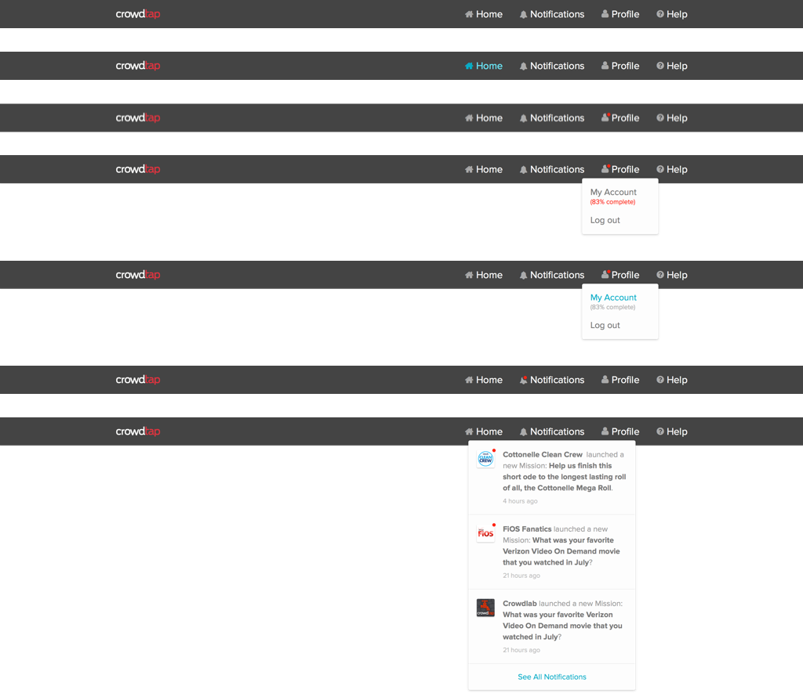

Damn
That red is intense.
(It may not seem like it but that's how a redesign starts. Sort of.)
In 2015, Crowdtap's UX team was in a bind. They were struggling to fit new features into an old, unattractive, and clumsy product.
While updating a core piece of the product, the team realized it couldn't shoehorn more into the current design; it would've been terrible.
That was our chance.
And it started with that crazy red.
My most important responsibilities were closer to the top of the funnel—a welcome view, first time user flow, and the “starting” page of the product experience.
Unfortunately there wasn't much time. We had to be very tactical about how we spent it. We couldn't touch every page and we couldn't get everything perfect.
We resolved to do as much as we could to the most important views and user flows in order to clear a path for bigger changes to come.
Welcome back to Crowdtap
From red to blue


The welcome experience aims to do two things—set expectations for the product experience and capture some additional user info.
A place to interact with the brands who make a lot of the products you use.

After completing an interactive onboarinding experience—using the product itself—users are set free on the Portal page (above). It's where users can find the brands and the activites Crowdtap offers.
A brief look at some of the components
Crowd Cards

Navigation
Notifications

Footer
Responsible for
interface, interaction, and some experience design